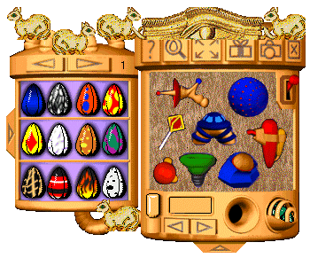
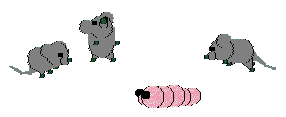
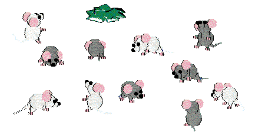
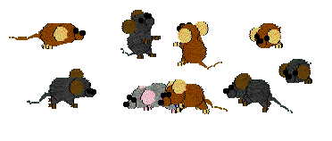

Go here for my Oddballz breedz
Go here for my Oddballz' sounds
click here to get the
demo/starter kit
Go here to get the game-fooler
kit
There is now a fooler for the Mac demo too :-)
Go here for my Easy breedz kit
(Windows packages, Mac users need to use ResEdit)
A new look for your Oddballz game
~~~~~~~~~~~~~~~~~~~~~~~~~~~~~

My Egyptian-style toyshelf
To make this work you also need
my Oddballz Easy Shelf kit
NOTE -- Since the arrival of Tinker 1.5, editing the "Easy kit"
filmstrips and customising the whole look of your game is now beautifully simple! You can change the whole look
of your game and toyz, and you can share the results with other Easy kit users :-)
Other Oddballz Goodies...
Mouse "grubz" for you
~~~~~~~~~~~~~~~~~~~~~~~~~~~~~
NOTE: These "mice" will overwrite your game's own grubz files. Please put your originals somewhere safe, and read the readme files included!

Joshua's mouse
Here is a mouse, made by Joshua of
Joshua's Petz Laboratory, using my Oddballz
Easy kit which you need to already have installed before you can use the mouse. Note that the oddballz will
eat or fall in love with the mouse (depending on the particular Oddballz' leanings) just as they would any
grubz!
And here are some different mice that I made using the Catz 1 and Petz 3 mice .LNZ files as reference. They
also need my Oddballz Easy kit to be installed first.

the petz-game white mouse
the Petz-game grey mouse

A black mouse
A brown mouse
Other useful pages for game-modders
~~~~~~~~~~~~~~~~~~~~~~~~~~~~~
Nicholas' tools
You can find the link to the download site and some info on using LNZPro and Tinker here, both of which can be
used along with my easy-edit kits to customise your own game.
Vital LNZ info
The "lnz info" pages are a breakdown of all the items which can be put into your breedz' lnz, along with
information and syntax. The Oddballz-specific ones are still not yet written up, but if you browse through all
the ones for Petz you should get a clear idea of what each part does.
.